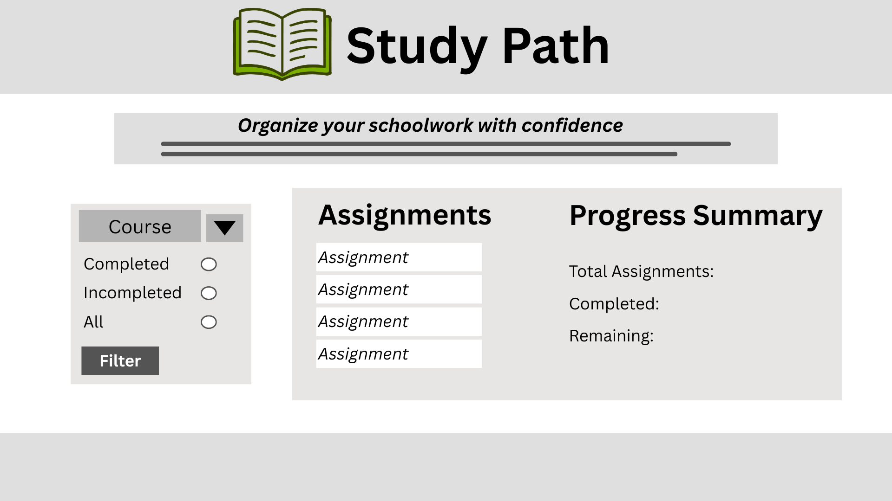

Site Name
Study Path was chosen because it represents a clear path for students to stay organized and succeed in their coursework. The name is simple, professional, and easy to remember.
Purpose
StudyPath is a web application designed to help students organize assignments, track due dates, and manage their school workload more effectively. The site provides a simple way to view tasks, filter them by course or completion status, and stay on top of deadlines.
Audience
The intended audience is high school and college students who need help managing assignments and deadlines. It is especially useful for students taking multiple classes who want a clear and simple way to stay organized.
Dynamic Elements
JavaScript will be used to display assignment data, filter tasks by course or completion status, and allow users to mark assignments as completed. The site will use arrays of objects to store assignments, event listeners to respond to user interactions, and conditional logic to show messages such as overdue alerts or completion updates.
Logo
Color Schema
Primary: #6B8E23 (olive green)
Secondary: #A3B18A (soft sage green)
Accent: #DDA15E (warm tan/gold)
Background: #F6F7F2 (very light greenish off-white)
Text: #2F3E2C (dark olive for readability)
Typography
Heading Font: Poppins
Body Font: Open Sans
These fonts were chosen because they are clean, modern, and easy to read on both desktop and mobile devices.
Content
The site will include assignment cards with titles, course names, due dates, and completion status. It will also include filtering options, a progress summary, and helpful study tips. Example assignments include math homework, discussion posts, and lab reports. The site will include clear headings and simple instructions for users.
Wireframe
